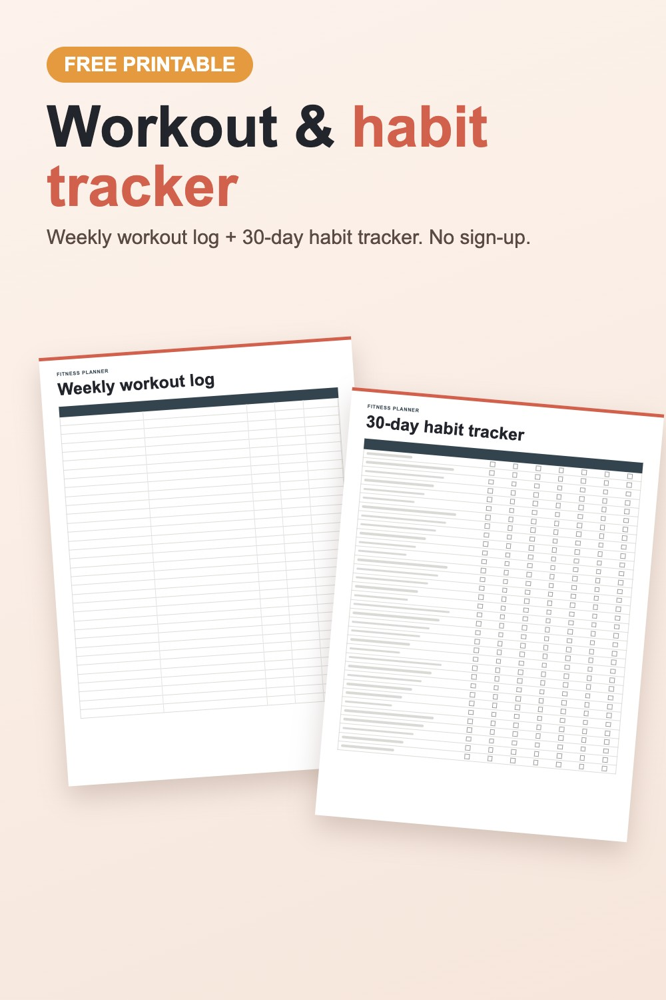

Two pages to start your fitness year: a weekly workout log with your measurements, and a 30-day habit tracker for workouts, water, sleep and steps. No sign-up, just download.
Download free PDF (A4)Download free PDF (US Letter)
The 32-page Fitness Planner adds 4 detailed workout logs, strength records, a cardio log, meal plan and food diary, body measurements, a weight tracker, three 30-day challenges and monthly check-ins. Hyperlinked for iPad.
See the fitness plannerMore free printables: free cleaning checklist, free monthly budget template, free 2027 calendar.